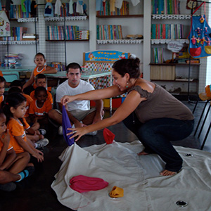
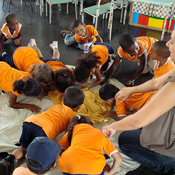
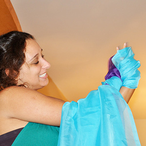
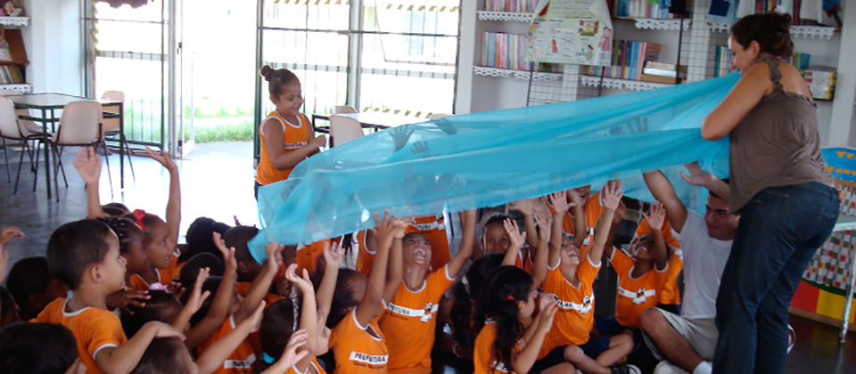
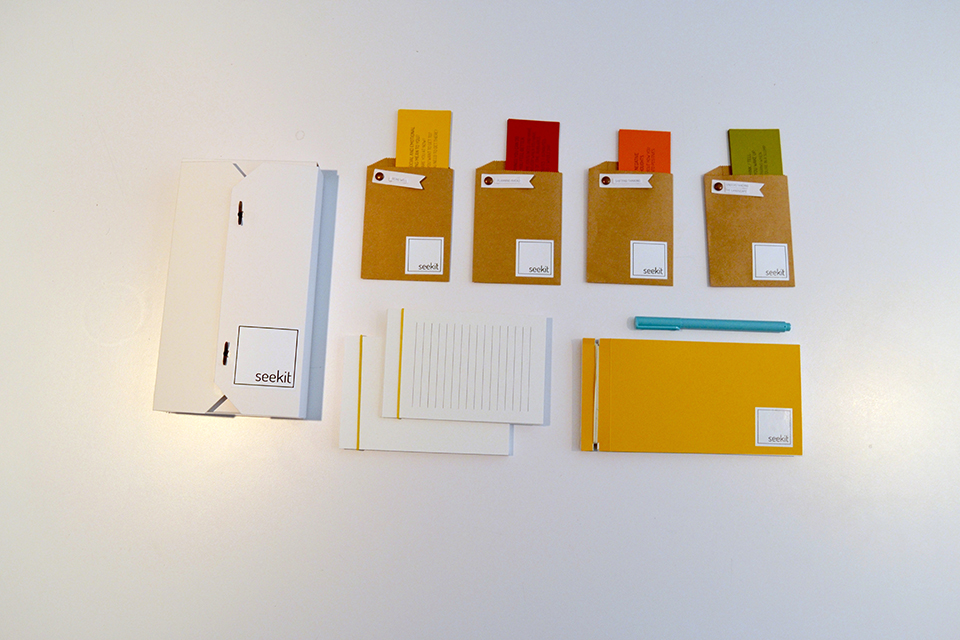
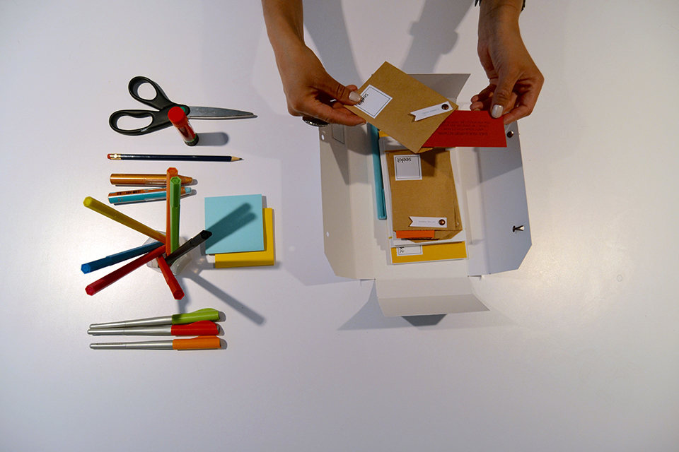

Your Mission to bring magic to children all over the world deeply resonates with me. I believe stories have the power to positively impact the lives of children.
The Storytelling Carpet was one of my first design school projects, and it continues to be among the ones I’m most proud of.



It was developed in collaboration with a storyteller who works with children in some of Rio de Janeiro’s poorest favelas. The carpet works as a way to physically illustrate stories, bringing them to life, and helps children connect and engage with the narrative.

I recently graduated with an MFA in Design for Social Innovation, from the School of Visual Arts, in New York City. In this program I was able to combine my passion for design and creativity with my desire to do work that has a positive impact in the world. There, I developed skills in user centered design, systems thinking, design research, facilitation and storytelling.
These skills have enhanced my way of looking at the world and how I approach the design process: always putting the users front and center. I am passionate about designing experiences driven by happiness, connection and magic!

For my graduate thesis project, I created Seekit, a tool to help college students suffering from depression better understand how they are affected and prepare for their ups and downs. Through research with multiple stakeholders, analysis and insight generation, prototyping and co-creation sessions, I developed a toolkit that allows students to explore their experiences with depression at their own pace and find ways to plan for low moments.

I am currently based in New York City, but am ready for a new adventure! I love to travel, meeting new people and experiencing different cultures. I have previously lived in Johannesburg, Hong Kong and Cardiff. I am fluent in both English and Portuguese and also speak intermediate French.
I thrive when working in collaborative, multidisciplinary teams and would love to join the Lost My Name team to help design experiences that make your customers happy.
Want to see more?
Take a look at my website.
Please get in touch!